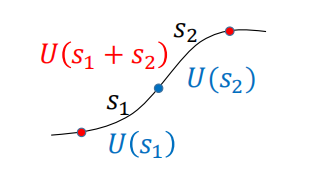

量子泊松括号
经典类比
由于量子力学是比经典力学更为基础的理论，量子力学中的规律应在经典力学中有对应的经典简化表现。因此我们可以通过经典力学中的一些概念来类比理解量子力学中的对应概念。经典力学中，系统的状态由相空间中的点 (q,p) 描述，物理量由相空间中的函数 μ(q,p) 描述。两个物理量 μ 和 ν 的泊松括号定义为
[μ,ν]PB=i=1∑N(∂qi∂μ∂pi∂ν−∂pi∂μ∂qi∂ν)
其中 N 是系统的自由度数目。泊松括号满足以下性质：
- 反对称性：[μ,ν]PB=−[ν,μ]PB
- 线性：[aμ+bν,λ]PB=a[μ,λ]PB+b[ν,λ]PB
- 乘积法则：[μν,λ]PB=μ[ν,λ]PB+ν[μ,λ]PB
- 雅可比恒等式：[μ,[ν,λ]PB]PB+[ν,[λ,μ]PB]PB+[λ,[μ,ν]PB]PB=0
量子泊松括号
但在量子力学中，μ 和 ν 的乘法不满足交换律，因此无法直接使用经典力学中的泊松括号定义。接下来我们将通过上述条件来唯一地确定量子泊松括号。根据经典泊松括号的乘法法则，我们对比以下两个量子泊松括号：
[μ1μ2,ν1ν2]=μ1[μ2,ν1ν2]+[μ1,ν1ν2]μ2=μ1ν1[μ2,ν2]+μ1[μ2,ν1]ν2+ν1[μ1,ν2]μ2+[μ1,ν1]ν2μ2
[μ1μ2,ν1ν2]=[μ1,ν1ν2]μ2+μ1[μ2,ν1ν2]=ν1[μ1,ν2]μ2+[μ1,ν1]ν2μ2+μ1ν1[μ2,ν2]+μ1[μ2,ν1]ν2
两式右边应是相等的，我们有
μiνi−νiμi=c[μi,νi]Q
经典力学：两个实变量组成的 [μi,νi]PB 应是实数
量子力学：两个厄米算符组成的 [μi,νi]Q 也应是厄米算符
其中 c 必须是一个数。又因为 μiνi−νiμi 是反厄米的，而 [μi,νi]Q 是厄米的，因此 c 必须是一个纯虚数。我们取 c=iℏ，从而得到量子泊松括号的定义：
[μ,ν]Q=iℏ1(μν−νμ)=iℏ1[μ,ν]
其中 ℏ 具有作用量的量纲：[ℏ]=[q][p]=[E][t]。为使理论与实验相符，我们必须取 ℏ=h/2π。
量子条件
设想：量子泊松括号与经典泊松括号具有相同的值：[μ,ν]Q=[μ,ν]PB。这意味着
[μ,ν]PB⟷[μ,ν]Q=iℏ1[μ,ν]
那么量子泊松括号也满足
[q^i,q^j]=[p^i,p^j]=0
[q^i,p^j]=iℏδij
这就是基本量子条件（正则对易关系）。
- 基本量子条件只能应用于有经典对应的动力学系统（能用 q 和 p 描述）。但是量子力学中的自旋等内禀自由度没有经典对应，因此不能用基本量子条件来描述。
- 基本量子条件为量子力学和经典力学之间建立了桥梁，经典力学可以看作量子力学在 ℏ→0 下的极限情况。
- 量子泊松括号是一个纯粹的代数概念，因此是比经典泊松括号更为基本的概念，后者只能通过参考 𝑝 和 𝑞 来定义。由于这个原因，在量子力学中，正则坐标和动量的核心地位被削弱。
- [q^i,p^j]=iℏδij 表明不同自由度的动力学变量是对易的。凭借物理直觉，我们或许能够找到某些动力学系统的量子条件，即使这些系统中并不存在 q 和 p。
经典变量（与 q 和 p 有关）的经典泊松括号和经典变量对应算符的量子泊松括号的值是一样的，这就是正则量子化。
那么可以证明位置算符 q^ 和动量算符 p^ 的对易关系
[q^i,G(p^)][p^i,F(q^)]=iℏ∂p^i∂G(p^)=−iℏ∂q^i∂F(q^)
态和可观测量的变换
幺正变换
我们为什么要引入幺正变换？考虑一个具有逆变换的线性算符 U，它将一个线性算符 a^ 变换为另一个线性算符 α~
α~=U−1a^U
那么有
α~(U−1∣α′⟩)=U−1a^U(U−1∣α′⟩)=U−1α′∣α′⟩=α′(U−1∣α′⟩)
这表明 U−1∣α′⟩ 是 α~ 的本征态，且对应的本征值与 a^ 的本征值相同。因此，算符的幺正变换并不会改变其本征值，只会改变其本征态。幺正变换还具有以下性质
α1+α2α1α2=U−1(a^1+a^2)U=U−1a^1U+U−1a^2U=α~1+α~2=U−1(a^1a^2)U=U−1a^1UU−1a^2U=α~1α~2
我们需要一个能将任意厄米算符 α 变换为另一个厄米算符 α~ 的幺正变换 U，即满足
U−1αU=α~
这意味着幺正变换 U 需要保持厄米性，即
U−1αU=(U−1αU)†
从而得到
U†U=c1
其中 c=c∗≥0 是一个常数。为了简化，我们取 c=1，从而得到幺正算符和幺正变换的定义
U†U=UU†=1α~=U†αU
幺正变换是经典力学中正则变换的量子对应。
幺正变换可以描述对称操作和时间演化。
连续幺正变换
在空间转动中常涉及连续变换。考虑一个实数 x，令 u=e−ix，那么有 uu∗=1，这与幺正算符的定义类似，我们是否可以将
幺正算符 U 写成 U=e−iA 的形式呢？定义一个无穷小的幺正变换
U=1−iϵF,ϵ→0
注意 ϵF 是无量纲的。由于 U 是幺正的，我们有
(1−iϵF)†(1−iϵF)=1⟹F=F†
即 F 是厄米算符。我们将 F 称为连续幺正变换的生成元。现在我们考虑线性算符 α 在无穷小幺正变换下的变换
α~=U†αU=(1+iϵF)α(1−iϵF)=α+iϵ[F,α]⇒α~−α=−iϵ[F,α]=−iϵiℏ[F,α]Q=ϵℏ[F,α]Q
在无穷小变换下，线性算符 α 的变化量与它和生成元 F 的量子泊松括号成正比。考虑一个单参数的连续幺正变换算符族 U(s)，若令 U(0)=1 为恒等变换，且
U(s1+s2)=U(s1)U(s2)

平移、旋转和伽利略变换都属于单参数连续幺正变换。
对于一个无穷小单变量幺正变换，s≪1，我们有
U(s)=1−sdsdUs=0
根据幺正性的条件，我们有
U†(s)U(s)=1⟹(dsdU†+dsdU)s=0=0
那么 dsdUs=0 是一个反厄米算符，因此我们总可以将其写成一个 i 和厄米算符 K 的乘积形式，即
dsdUs=0=−iK
由于 K≡idsdUs=0 决定了所有的 U(s)，我们可以将 K 称为幺正算符族的生成元，在 U(0)=0 的条件下解 K 的微分方程，我们得到
U(s)=e−iKs
因此，我们证明了：单参数连续幺正变换可以写成生成元的指数形式。
Wigner定理
我们知道，自然规律在一些时空对称操作下是不变的，每一个这样的时空变换都对应着希尔伯特空间的量子态和可观测量的变换。例如变换前的波函数 ∣ψ⟩ 和变换后的波函数 ∣ψ~⟩ 的展开分别为
∣ψ⟩=n∑⟨αn∣ψ⟩∣αn⟩∣ψ~⟩=n∑⟨α~n∣ψ~⟩∣α~n⟩
其中 ⟨αn∣ψ⟩2 和 ⟨α~n∣ψ~⟩2 是相同事件在不同参考系下的概率，所以应有
∣⟨αn∣ψ⟩∣2=⟨α~n∣ψ~⟩2
Wigner 定理：任何将向量空间映射到自身且保持 ∣⟨ϕ∣ψ⟩∣ 的值不变的映射，都可以通过一个算符 U 实现，
∣ψ⟩→∣ψ⟩=U∣ψ⟩,∣ϕ⟩→∣ϕ⟩=U∣ϕ⟩
而这个算符 U 要么是幺正且线性的，要么是反幺正且反线性的。
- 线性：算符 U 可以越过复数而不改变结果
- 反线性：算符 U 越过复数时会将复数改为其共轭形式，即 U(c∣ψ⟩)=c∗U∣ψ⟩。
- 幺正：⟨ϕ∣ψ⟩=⟨ϕ∣ψ⟩
- 反幺正：⟨ϕ∣ψ⟩=⟨ϕ∣ψ⟩∗
- 两个反幺正变换等价于一个幺正变换。
定理一：任意的连续变换只能用幺正变换描述
定理二：离散对称性只能用反幺正和反线性算符描述
平移
平移算符
我们定义位置平移算符 T(x)
∣q′+x′⟩=T(x′)∣q′⟩
其中 q∣q′⟩=q′∣q′⟩。根据 Wigner 定理，平移算符是一个幺正算符，满足
T(x′)T(x′′)=T(x′+x′′)
那么平移算符的的表达式可写为
T(x′)=e−iKx′
k 的量纲应是 x′ 的倒数，因为 e 指数上的算符一定是无量纲的。
我们接下来探究 K 的物理意义。我们可以证明，
[q^,T(dx′)]∣q′⟩=dx′∣q′+dx′⟩≈dx′∣q′⟩
令 x′=dx→0，那么 T(dx′)=1−iKdx′，代入上式得到
[q^,K]=i
从量纲分析角度，[K]=1/[x′]=[p]/[ℏ]，因此我们很自然地设想 K 算符是经典波数 k 的量子对应算符，那么平移算符可以写成
T(x′)=e−ikx′=e−ip^x′/ℏ,[q,p^]=iℏ
这样我们从平移算符出发，以另一种方式得到了基本量子关系。狄拉克使用量子与经典的对应关系得到了这个结果，而我们这里则只基于平移算符的性质和平移算符的生成元 K 得到了相同的结果。
由于 K 和 p^ 只差一个常数因子，我们称 p^ 也是平移算符的生成元。
拓展到更高维的情况，我们直接写出
T(x′)=e−ip^⋅x′/ℏ,[q^i,p^j]=iℏδij
我们知道平移操作是可以对易的，因此
[T(dxj′ej),T(dxi′ei)]=[T(dxi′ei),T(dxj′ej)]
代入平移算符的表达式，我们得到
0=[1−ℏip^jdxj′,1−ℏip^idxi′]=ℏ2dxi′dxj′[p^i,p^j]
这样就得到了动量算符的对易关系
[p^i,p^j]=0
由于具有对易性，平移算符群是一个阿贝尔群。
薛定谔表象（位置表象）
考虑一个由 p 和 q 描述的自由度为 f 的动力学系统，我们有理由假设：每个自由度对应的位置算符 qi 是可观测量且具有连续的本征值。在所有 qi 都是对易的情况下，我们将建立一个表象。
波函数
为简单起见，我们先考虑 f=1 的情况。任意态 ∣α⟩ 在位置表象下的表示为
∣α⟩=∫dq′∣q′⟩⟨q′∣α⟩
我们定义波函数为
⟨q′∣α⟩≡ψα(q′)
考虑 ∣α⟩ 在 ξ 表象下的展开（离散谱）
∣α⟩=ξ′∑∣ξ′⟩⟨ξ′∣α⟩
那么波函数可以写成
ψα(q′)=⟨q′∣α⟩=ξ′∑⟨q′∣ξ′⟩⟨ξ′∣α⟩=ξ′∑⟨ξ′∣α⟩μξ′(q′)
其中 μξ′(q′)≡⟨q′∣ξ′⟩ 称为 ξ 表象下的本征函数（也就是本征波函数）。本征函数具有以下正交性
∫dq′μξ′∗(q′)μξ′′(q′)=⟨ξ′∣ξ′′⟩=δξ′ξ′′ξ′∑μξ′∗(q′)μξ′(q′′)=δ(q′−q′′)
对于一个线性算符 η，我们有
⟨β∣η∣α⟩=∫dq′dq′′⟨β∣q′⟩⟨q′∣η∣q′′⟩⟨q′′∣α⟩=∫dq′dq′′ψβ∗(q′)⟨q′∣η∣q′′⟩ψα(q′′)
我们需要知道矩阵元 ⟨q′∣η∣q′′⟩ 的才能计算 ⟨β∣η∣α⟩。而在特殊情况下，当 η 是 q 的函数时 η=η(q^)
⟨β∣η(q^)∣α⟩=∫dq′dq′′ψβ∗(q′)⟨q′∣η(q^)∣q′′⟩ψα(q′′)=∫dq′ψβ∗(q′)η(q′)ψα(q′)
这就是位置算符的函数在波函数下的平均值。
动量算符在位置表象下的表示
设有一个无穷小平移变换 T(dx′)=1−ℏipdx′，那么有
ψ(q′−dx′)⇒⟨q′∣p^∣α⟩⇒⟨q′∣p^∣α⟩=⟨q′∣T(dx′)∣α⟩=⟨q′∣(1−ℏip^dx′)∣α⟩=ψα(q′)−ℏidx′⟨q′∣p^∣α⟩=−iℏdx′ψα(q′)−ψα(q′−dx′)=−iℏ∂q′∂ψα(q′)=−iℏ∂q′∂ψα(q′)≡p^⟨q′∣α⟩
最后我们推出了动量算符在位置表象下的表示
p^=−iℏ∂q∂
总的来说，任意抽象算符 ξ 在位置表象下的形式都可以通过下式得到
⟨q′∣ξ∣α⟩=ξ^⟨q′∣α⟩
那么动量在位置表象下的平均值可由下式计算
⟨β∣p^∣α⟩=∫dq′ψβ∗(q′)(−iℏ∂q′∂)ψα(q′)
动量算符在 q 表象下的矩阵元是 δ 函数的偏导
⟨q′∣p^∣q′′⟩=−iℏ∂q′∂δ(q′−q′′)
可以证明，只有当空间边界项为零时，p^ 才是厄米的
ψα∗(q′)ψβ(q′)ab=0
坐标表象
坐标算符在其本征态 ∣q⟩ 下的矩阵元应是对角的
⟨q′∣q^∣q′′⟩=q′δ(q′−q′′)
而动量算符在坐标表象下的矩阵元是非对角的
⟨q′∣p^∣q′′⟩=−iℏ∂q′∂δ(q′−q′′)
动量表象
动量表象
根据算符 p^ 和 q^ 的对易关系，我们知道他们之间是存在对称性的，因此我们也可以建立动量表象。动量表象下的本征基矢满足 p^∣p′⟩=p′∣p′⟩，由 ⟨q′∣p^∣p′⟩=−iℏ∂q′∂⟨q′∣p′⟩，我们可以得到平面波的表达式
⟨q′∣p′⟩=C(p′)eip′q′/ℏ
我们要求动量本征态的内积满足
⟨p′∣p′′⟩=C∗(p′)C(p′′)∫dq′ei(p′′−p′)q′/ℏ=C∗(p′)C(p′′)2πδ(ℏp′′−p′)=∣C(p′)∣22πℏδ(p′′−p′)=δ(p′′−p′)
从而确定了归一化常数
C(p′)=2πℏ1
因此得到了平面波
⟨q′∣p′⟩=2πℏ1eip′q′/ℏ
可以证明，位置算符在动量表象下的表示为
q^=iℏ∂p∂
平移算符在动量表象下的表示为
T(p′)=eiq^p′/ℏ
动量空间的波函数 ϕα(p′) 定义为
ϕα(p′)=⟨p′∣α⟩=∫dq′⟨p′∣q′⟩⟨q′∣α⟩=2πℏ1∫dq′e−ip′q′/ℏψα(q′)
对比坐标空间的波函数 ψα(q′)
ψα(q′)=⟨q′∣α⟩=∫dp′⟨q′∣p′⟩⟨p′∣α⟩=2πℏ1∫dp′eip′q′/ℏϕα(p′)
可以看出两者互为傅里叶变换。在实际中，薛定谔表象相比于动量表象更加重要，因为：大多数势能函数 V(q) 在位置表象下的表示比较简单，而在动量表象下需要对 p 求偏导，计算十分复杂。（谐振子例外）
高斯波包
高斯波包是满足最小不确定性关系的波函数，形式为
ψα(q′)=⟨q′∣α⟩=πd1exp[ikq′−2d2q′2]
这是由中心在原点处的高斯分布调制的平面波。通过计算可以得到
⟨q⟩=0,⟨q2⟩=2d2⟨p⟩=ℏk,⟨p2⟩=ℏ2(k2+2d21)
从而得到不确定关系
⟨(Δq)2⟩⟨(Δp)2⟩=4ℏ2=41∣⟨[q^,p^]⟩∣2
因此，高斯波包常被称为最小不确定性波包。
最小不确定性的判据（λ∈R）
ΔA∣ψ⟩=iλΔB∣ψ⟩